Item-level A/B testing
This is a SQL project of an eCommerce company, we have users and we can alter their experience, but we also have items for sale. By changing the way the items look for some portion of items, we can conduct A/B testing at an item-level and measuring “success” at an item level. Running an experiment at an item-level, all users who visit will see the same page, but the layout of different item pages may differ.

1. Data Quality Check
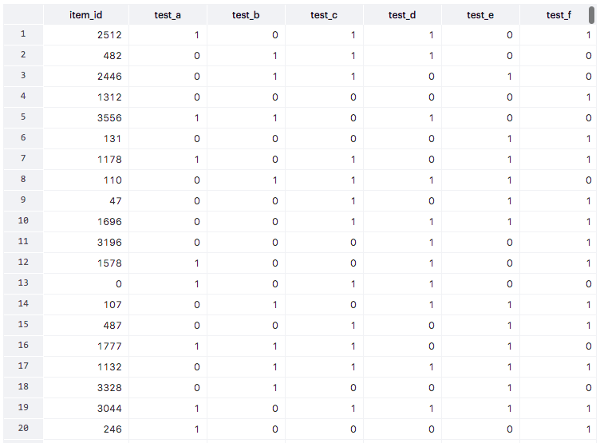
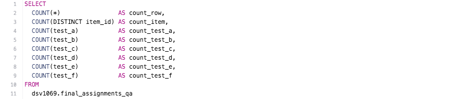

After quality check, we are confident that there's no NULL value. But the final_assignments_qa table is not enough to compute metrics like 30-day view-binary, because we are missing information like test date/time.
2. Reformat the Data
Write a query and table creation statement to make final_assignments_qa look like the final_assignments table. If something missing, we may fill in the value with a place holder of the appropriate data type.

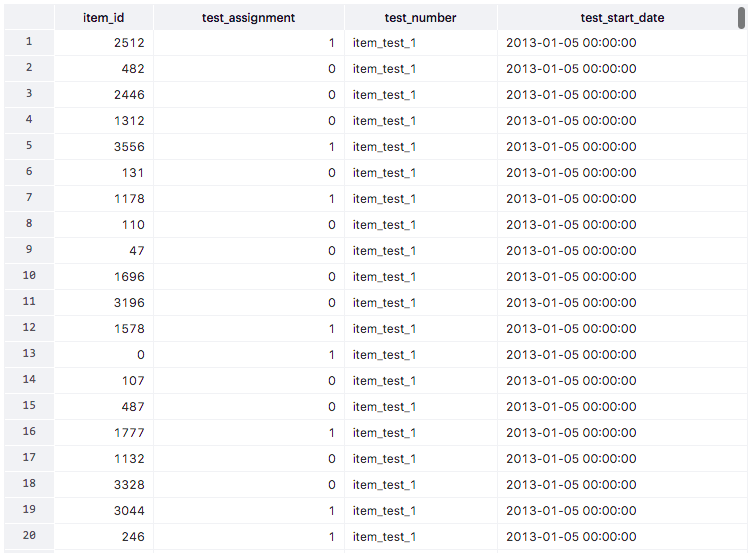
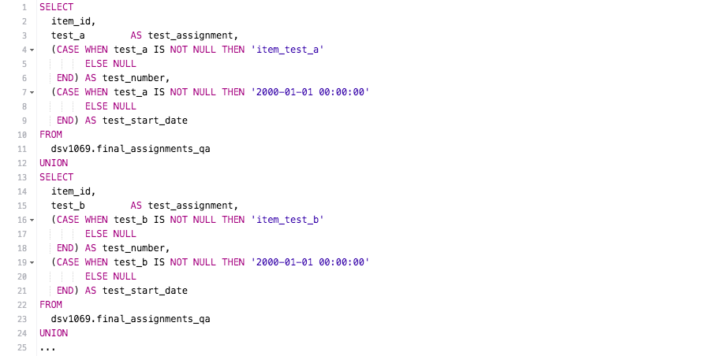
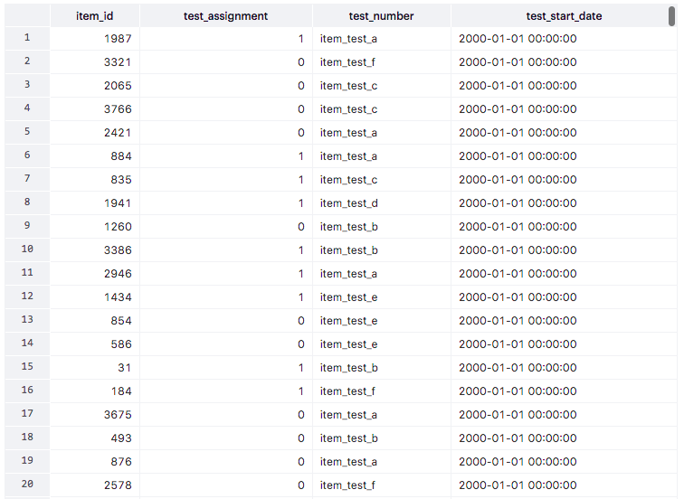
3. Compute Order Binary
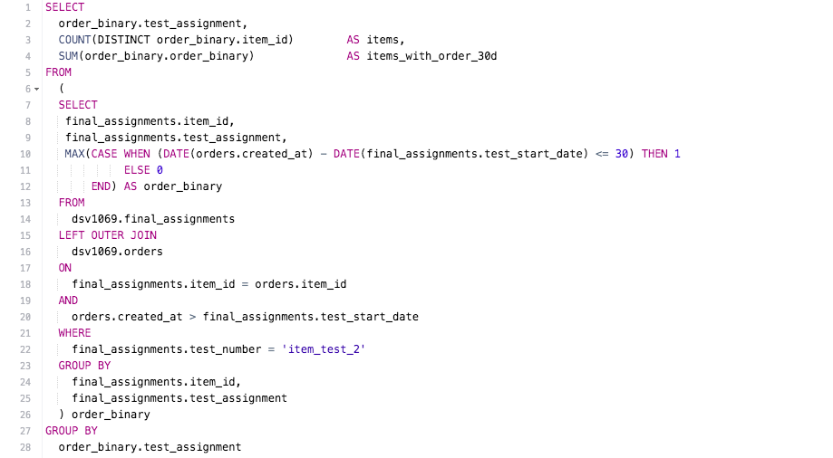
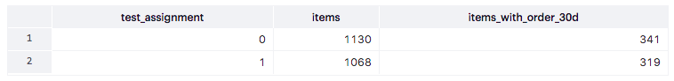
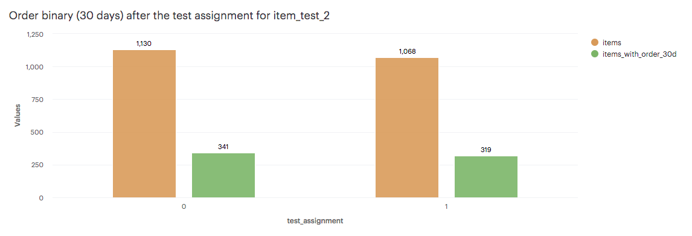
4. Compute lift and p-value for order binary
Use the https://thumbtack.github.io/abba/demo/abba.html to compute the lifts in metrics and the p-values.
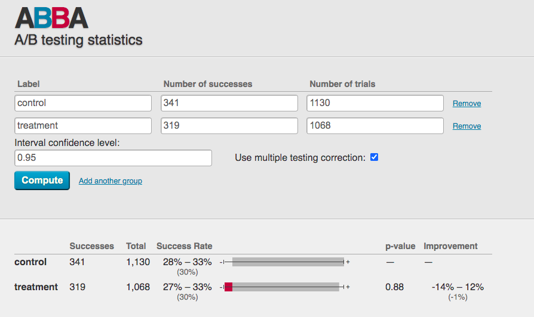
There was an improvement of -1% in the treatment group with the new layout item pages. However, with a p value of 0.88 the results are not statistically significant at a interval 95% confidence. Therefore, we cannot conclude that the decrease of order conversion rate was caused by the new layout design.
5. Compute View Item Metrics
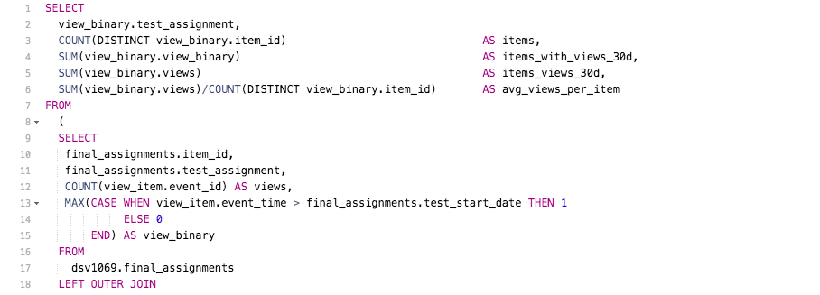
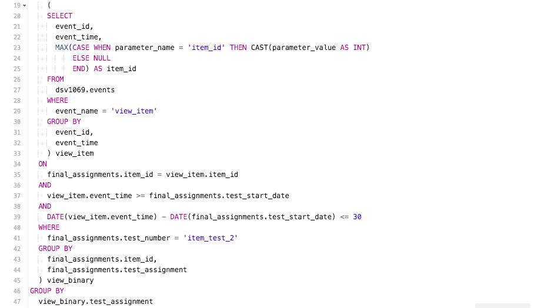
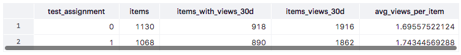
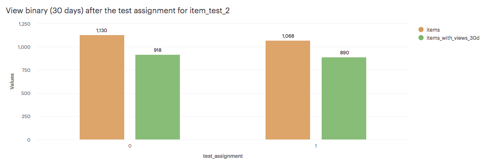
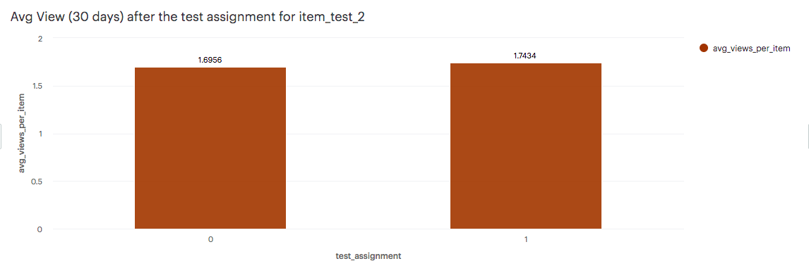
6. Compute lift and p-value for view binary
Use the https://thumbtack.github.io/abba/demo/abba.html to compute the lifts in metrics and the p-values.
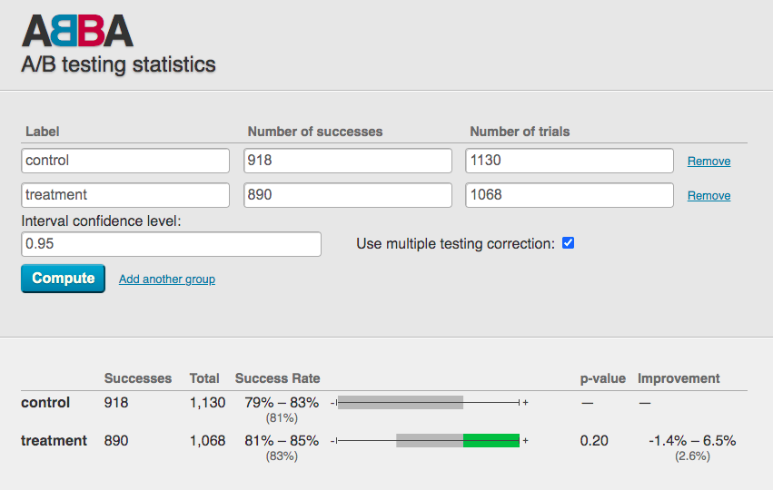
There was an improvement of 2.6% in the treatment group with the new layout item pages. However, with a p value of 0.20 the results are not statistically significant at a interval 95% confidence. Therefore, we cannot conclude that the increase of conversion rate in views was caused by the new layout design.